一句话概括:前馈式 3DGS 的像素对齐(parcel-aligned)范式把 Gaussian 绑死在相机射线上,空间自由度受限、怕深度误差与位姿扰动;而 query-based 前辈 TokenGS 虽然解开了像素网格,却把几何属性(依赖全局空间推理)与外观属性(依赖局部高频纹理)塞进同一组查询里联合回归,导致属性纠缠、渲染发糊,且只靠 2D 光度监督从零学结构、没有 3D 先验和正则坐标系,离不开精确位姿。QuerySplat 的解法是属性解耦的双分支双查询解码器 + 冻结的预训练视觉几何模型(VGM)先验:几何查询只从 VGM 几何特征解码位置/尺度/旋转,外观查询以几何 token 为基、只从 RGB+Plücker 内存解码不透明度/SH 颜色;坐标系、相机全部来自 VGM 自建(self-calibrated),因此原生 pose-free。
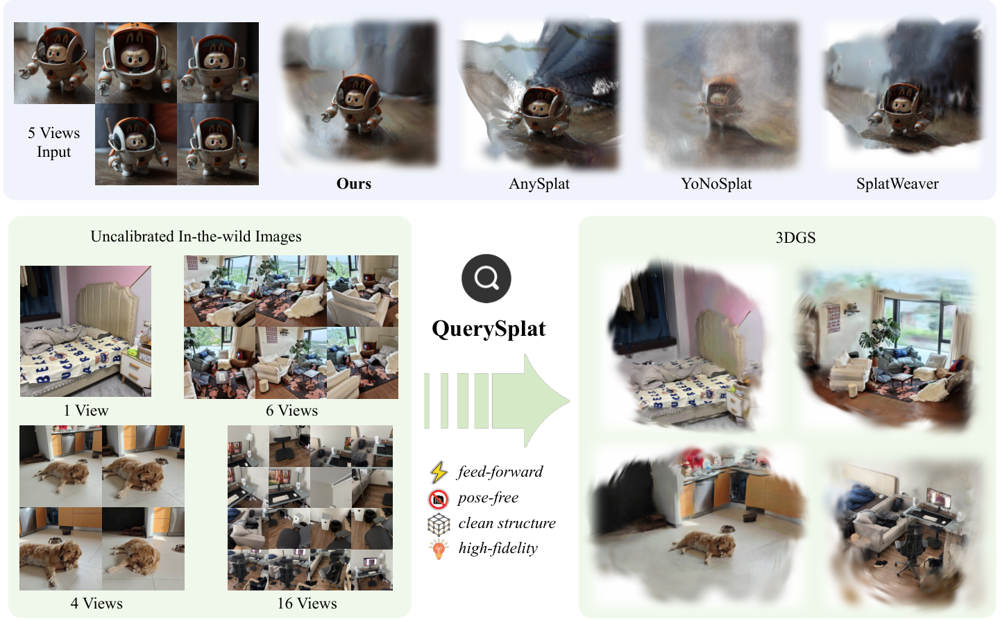
前馈重建(FFR)一次性预测场景参数,免去了逐场景优化与密集采集(引言)。但两条技术路线各有具体的失败模式——QuerySplat 的动机不是"效果不好",而是以下四个可指认的缺陷:
主流 FFR 把 Gaussian primitive 绑在相机射线上(像素对齐)。primitive 的空间自由度被 2D 观察空间锁死:对深度误差与相机位姿扰动高度敏感,多视角像素冲突累积成几何漂移与重影(引言原文)。primitive 数量也被输入分辨率绑死,无法向复杂区域灵活分配。
TokenGS 用可学习查询在连续空间解码 Gaussian,解开了像素网格,但把全部属性塞进统一查询表示:几何属性需要全局跨视角空间推理,外观属性依赖局部高频纹理,强制一起建模造成根本错配——外观变化干扰几何学习,输出过度平滑、发糊(引言原文,Related Work 称 "severe attribute entanglement")。
只靠 2D 光度监督从零学结构,query-based 模型没有显式 3D 先验、没有正则坐标系,严格依赖精确相机位姿,无法用于未标定的 in-the-wild 输入(引言)。位姿错了没有先验可以兜底。
关键假设及其失效条件:「不同属性应各自聚合各自需要的证据」假设 Gaussian 各属性的监督信号在空间频率与感受野需求上可分——若某场景的外观强依赖几何(如强烈视角相关材质、镜面),两分支共享的 $\mathbf{Z}_{\mathrm{geo}}$ 基态仍会把外观梯度传回几何 token,解耦并不彻底【推测,代码 post_detach_query=false 默认不切断该通路,见 §11】。
输入为 $N$ 张未标定 RGB 图像 $\mathcal{I}_{\mathrm{in}}=\{I_i\}_{i=1}^{N}$(视角数可变),网络单次前馈预测可渲染的 Gaussian 集合:
其中 $\mathbf{r}$ 旋转四元数、$\mathbf{p}$ 中心、$\mathbf{s}$ 各向异性尺度、$\alpha$ 不透明度、$\mathbf{c}$ 球谐系数。与像素对齐方法不同,模型用可学习 Gaussian 查询作为场景级 slot,每个查询解码为一组 Gaussian primitive,在 VGM 预测的相机下经可微渲染监督。
| 符号 | 含义 | 形状 / 取值(源码核实,§11) |
|---|---|---|
| $\mathbf{F}_{\mathrm{geo}}$ | VGM 几何特征(VGGT-Ω patch token 第 4/11/17/23 层融合 + camera/scene token) | patch 32×32/视图 × $d$=2048 |
| $\mathbf{Q}_{\mathrm{geo}},\mathbf{Z}_{\mathrm{geo}}$ | 几何查询参数 / 解码后几何 token | base 1024 个,finetune 渐进至 8192 个 |
| $\mathbf{F}_{\mathrm{app}}$ | 外观特征 = RGB patch embedding + Plücker 光线 embedding(由输入视角 VGM 相机算得) | 与几何同坐标系,6 通道光线 |
| $\mathbf{Q}_{\mathrm{app}},\mathbf{Z}_{\mathrm{app}}$ | 外观查询 / 外观 token(以 $\mathbf{Z}_{\mathrm{geo}}$ 为基态) | 外观解码器 6 个 block |
| $K$ | Gaussian primitive 总数 | 查询数 × 64 = 65,536(1024)→ 524,288(8192) |
| $\mathcal{P}$ | VGM 深度反投影的伪点云(早期 CD 正则用) | 仅训练前 20K 步使用 |
| $\alpha_{\min}$ | 不透明度地板 | 0.1(Appendix E) |
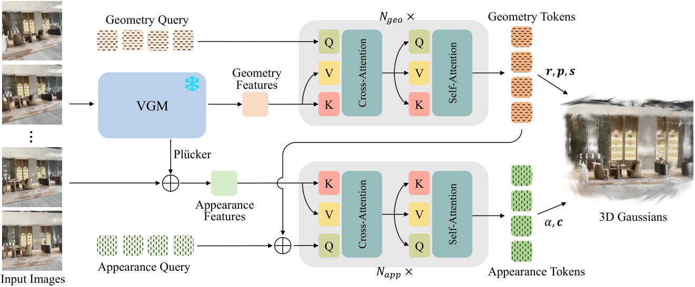
| 输入 | 层/算子 | 输出 |
|---|---|---|
RGB [B,N,3,512,512](unnormalized) | VGGT-Ω aggregator(patch 16,1B 级 backbone) | camera/scene token + patch token [B,N,32²,2048] |
| patch token 第 4/11/17/23 层 | 可学习 layer mixer(逐层权重加权) | $\mathbf{F}_{\mathrm{geo}}$ [B,N·1024,2048] |
| camera head / depth head | 均冻结并 eval(vggt_encoder.py:143-145) | 相机(w2c,OpenCV 约定)、内参、深度 |
requires_grad_(False) + eval()(vggt_encoder.py:128-129,143-145),梯度不回流。该模块无直接监督——论文明确:联合 finetune 会损害 VGM 的相机与几何一致性,冻结把角色干净分开:VGM 做通用几何推理,可训练解码器负责把 $\mathbf{F}_{\mathrm{geo}}$ 翻译成 Gaussian 几何(§3.1 原文)。这与 InfiniSplat v2 冻结 DA3 几何分支(防"移点补偿属性误差")是同一发现的两份独立证据。
防泄漏设计(关键):两趟处理严格隔离、无特征交换——监督视角的图像信息绝不进入重建通路,防止目标视角泄漏(§3 Self-Calibrated Coordinate System 原文;评测时 pose-free baseline 也受此约束,§4 Comparisons)。对齐后 $\mathbf{F}_{\mathrm{geo}}$、Plücker 光线、Gaussian 中心、监督相机全部落在同一坐标系。相机以第一输入视角为参考归一化,渲染 near/far = 0.025/125.0(Appendix E)。
| 输入 | 层/算子 | 输出 |
|---|---|---|
$\mathbf{Q}_{\mathrm{geo}}$ [B,K,2048](gs_token_std=0.01 初始化,querysplat.py:100-102) | prepend eye_token;12×DecoderBlock(d=2048, 16 heads, MLP ratio 4, qkv_bias, qk_norm, init_values=5e-3·std) | 几何 token [B,K,2048](弹出 eye_token) |
| 几何 token | PartialClipActivationHead(每 token 出 10 维:xyz+sxyz+quat) | 部分 Gaussian [B,64K,10];z += 1.0(z_offset)、scale cap 0.075 |
每个 block 含「对 $\mathbf{F}_{\mathrm{geo}}$ 的 cross-attention → 查询间 self-attention → MLP」;查询不绑像素,每个查询是潜在场景 slot,可从多个视角与特征位置收集证据后再展开为 Gaussian primitive(§3.4 原文)。
querysplat.py:211);gs_token_std=0.01 量级的扰动【推测】)。几何无逐点直接 GT 监督,三类间接约束:① 渲染光度损失经梯度回流位置/尺度/旋转;② 可见性正则 $\mathcal{L}_{\mathrm{vis}}$ 罚"落在所有相关相机视锥外或相机后方"的中心;③ 训练早期 CD 距离把中心拉向 VGM 伪点云(§8)。论文强调早期正则只在瞬态:全程施加会失稳,因为渲染最优的 Gaussian 构型本就偏离深度点云、位置与不透明度需要在图像空间监督下自由重组(§3.6 原文)。
| 输入 | 层/算子 | 输出 |
|---|---|---|
$\mathbf{Z}_{\mathrm{geo}}$(几何 token 基态)+ 独立可学习外观 token 参数(post_rgb_gs_tokens,querysplat.py:78-80) | 6×DecoderBlock(cross-attn 到外观内存) | color token |
| color token | post_rgb_delta_head 线性 → 每 token 64×(SH 系数+α) | 原始输出 → 激活(querysplat.py:225-237) |
$\mathbf{F}_{\mathrm{app}}$ = RGB patch embed(patch 16)+ Plücker patch embed 相加(querysplat.py:142-145);Plücker 由输入视角的 VGM 相机计算(querysplat.py:117-130),因此外观流与几何流同坐标系。K/V 经 LayerNorm + 线性 + 逐头归一化(querysplat.py:147-155)。
sh_rest_scale=0.1;querysplat.py:236)——初始预测整体偏透明,靠监督顶上去;gaussian_save_opacity_threshold=0.005,低于阈值不写入 PLY(yaml 配置)。外观属性(α、SH)直接由渲染光度损失 + LPIPS 监督;另有不透明度地板 $\mathcal{L}_{\alpha}$ 防训练早期 Gaussian 过早透明(§8)。
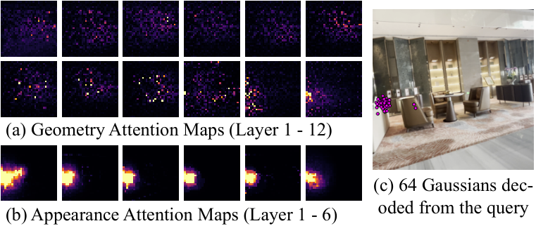
| 损失项 | 公式 / 形式 | 权重(真值) | 作用 | 出处 |
|---|---|---|---|---|
| 光度 $\mathcal{L}_1$ | 像素 L1 | 1.0 | 像素精度主信号 | Appendix E |
| 结构 $\mathcal{L}_{\mathrm{ssim}}$ | 1−SSIM(实现用 fused-ssim) | $\lambda_{\mathrm{ssim}}$=0.2 | 稳定局部结构 | Appendix E;代码 querysplat.py:382(TTO 同权重) |
| 感知 $\mathcal{L}_{\mathrm{lpips}}$ | LPIPS(VGG16,FP32 求值) | $\lambda_{\mathrm{lpips}}$=0.05,100K 步后渐进引入 | 纹理感知质量 | Appendix E;代码 querysplat.py:360-368 |
| 可见性 $\mathcal{L}_{\mathrm{vis}}$ | 罚视锥外/相机后中心(沿用 TokenGS) | 1.0 | 防查询产生收不到渲染梯度的漂浮 Gaussian | §3.6、Appendix E |
| 早期 CD $\mathcal{L}_{\mathrm{cd}}$ | 预测中心 ↔ VGM 伪点云双向 Chamfer | 初始 1.0,前 20K 步退火至 0 | 瞬态几何初始化先验 | §3.6、Appendix E |
| 不透明度地板 $\mathcal{L}_{\alpha}$ | 式 7,$\alpha_{\min}$=0.1 | 初始 0.1,退火至 0 | 防早期 Gaussian 过早透明 | §3.6、Appendix E |
| loss-rank filtering | 按历史重建损失保留 95% 样本 | — | 压制不稳定训练样本 | Appendix E(训练后期) |
querysplat.py:382,390)。主体是纯前馈;TTO 是可选的精度-耗时折衷:冻结查询、解码器、输出头,只在输入视角上用渲染损失优化"提取的特征内存"(代码默认优化 encoder latent 的 K/V + 外观内存 K/V,querysplat.py:267-323 optimization_target="kv")。因为是特征空间适配而非参数微调,结果仍被预训练查询→Gaussian 重建模型约束。
| 项目 | 论文说法 | 代码实测值(源码核实) |
|---|---|---|
| 优化对象 | the extracted features | K/V memory(或 features,--tto_target 可选) |
| 默认步数 | 20 / 50 步变体 | --tto_n_steps 默认 20(infer.py:69) |
| 学习率 | 未写 | --tto_lr 默认 5e-3(infer.py:70) |
| LPIPS 权重 | 未写 | --tto_lpips_weight 默认 0.05 |
收益(Appendix A):TTO 在输入视角收益最大,且增益迁移到 interp/extrap,说明它精化的是场景表示而非记忆观测;收益随输入视角数增长,多数收益在少量步数内获得。
源码来源:inspatio/QuerySplat main 分支(仅推理实现,2026-08-04 发布)。凡标"论文附录"的条目无训练代码可复核,置信度低于源码直读项。
| 条目 | 真值 | 出处(file:line / yaml 键) |
|---|---|---|
| VGM | vendored vggt_omega,全模块冻结+eval | vggt_encoder.py:128-129,143-145;vggt_checkpoint: checkpoints/vggt_omega_1b_512.pt |
| 特征层 | 第 4/11/17/23 层 + eye layer mixer | vggt_intermediate_layers: [4,11,17,23]、vggt_use_eye_layer_mixer: true |
| 解码器 | d=2048、16 heads、MLP ratio 4;qkv_bias、qk_norm、init_values=5e-3·0.01 | yaml enc_embed_dim/enc_num_heads/mlp_ratio;querysplat.py:83-93 |
| 几何解码深度 | 12 blocks | yaml dec_depth: 12 |
| 外观解码深度 | 6 blocks | yaml vggt_original_encoder_post_decoder_depth: 6 |
| 查询数 | 8192(paper ckpt 与 8192 ckpt 同),×64 primitive | num_gs_tokens: 8192、num_gaussians_per_token: 64 |
| 渲染器 | gsplat rasterization(标准 3D 各向异性 Gaussian,非 2DGS) | rendering/gs.py:8,46-58(quats+3D scales) |
| SH degree | paper ckpt = 0(DC only,指标更高);8192 ckpt = 1(视觉更好)——Appendix E 写 "first-order SH",与 paper ckpt 的 degree 0 存在口径差异,README 明说按论文复现用 SH0 权重 | 两份 yaml gaussian_sh_degree;README "The paper uses ... SH degree 0" |
| 激活 | α=sigmoid(raw−2.0)(初始偏透明);z 中心 +1.0;scale cap 0.075;保存阈值 α>0.005 | querysplat.py:211,236;yaml 键同名 |
| 几何↔外观梯度 | 外观分支默认不 detach 几何 token(post_detach_query: false)→ 外观梯度仍回流几何解码器,解耦在特征/查询空间而非梯度路径 | yaml;querysplat.py:243-244 |
| 输入视角 | VGGT-Ω 聚合 (s) | 解码器 (s) | 总推理 (s) | 峰值显存 (GiB) |
|---|---|---|---|---|
| 1 | 0.071 | 0.621 | 0.703 | 9.276 |
| 4 | 0.085 | 0.702 | 0.949 | 9.436 |
| 12 | 0.125 | 0.943 | 1.890 | 10.064 |
| 48 | 0.297 | 1.990 | 14.706 | 11.549 |
| 100 | 0.545 | 3.499 | 33.645 | 22.588 |
| 300 | 1.501 | 9.297 | 255.725 | 40.773 |
结论:查询数主要影响解码器耗时;大视角集合的瓶颈是 VGGT-Ω 聚合路径(300 视角时占 96%)。对 dense-capture 工作流,替代/裁减 VGM 输入或换轻量 backbone 是效率关键(论文原文 §C 结论一致)。
| 方法 | Pose-free | 2-view PSNR↑ | 2-view LPIPS↓ | 4-view PSNR↑ | 4-view LPIPS↓ | 12-view PSNR↑ | 12-view LPIPS↓ |
|---|---|---|---|---|---|---|---|
| DepthSplat(像素对齐) | ✗ | 20.54 | 0.259 | 22.91 | 0.185 | 21.68 | 0.205 |
| TokenGS(query 前辈) | ✗ | 20.43 | 0.378 | 23.27 | 0.303 | 21.81 | 0.370 |
| YoNoSplat | ✗ | 19.84 | 0.291 | 22.85 | 0.199 | 22.73 | 0.196 |
| AnySplat | ✓ | 14.07 | 0.448 | 17.39 | 0.342 | 19.63 | 0.299 |
| NoPoSplat | ✓ | 19.07 | 0.316 | — | — | — | — |
| SPFSplat | ✓ | 19.12 | 0.305 | — | — | — | — |
| SplatWeaver | ✓ | 15.70 | 0.367 | 19.24 | 0.272 | 20.40 | 0.252 |
| YoNoSplat(pose-free) | ✓ | 19.17 | 0.308 | 21.96 | 0.217 | 21.63 | 0.218 |
| QuerySplat | ✓ | 21.39 | 0.259 | 24.58 | 0.184 | 23.70 | 0.230 |
| QuerySplat + TTO-20 | ✓ | 22.01 | 0.248 | 26.25 | 0.159 | 27.00 | 0.167 |
| QuerySplat + TTO-50 | ✓ | 21.94 | 0.246 | 26.38 | 0.154 | 27.72 | 0.146 |
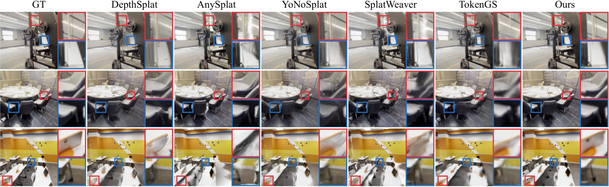
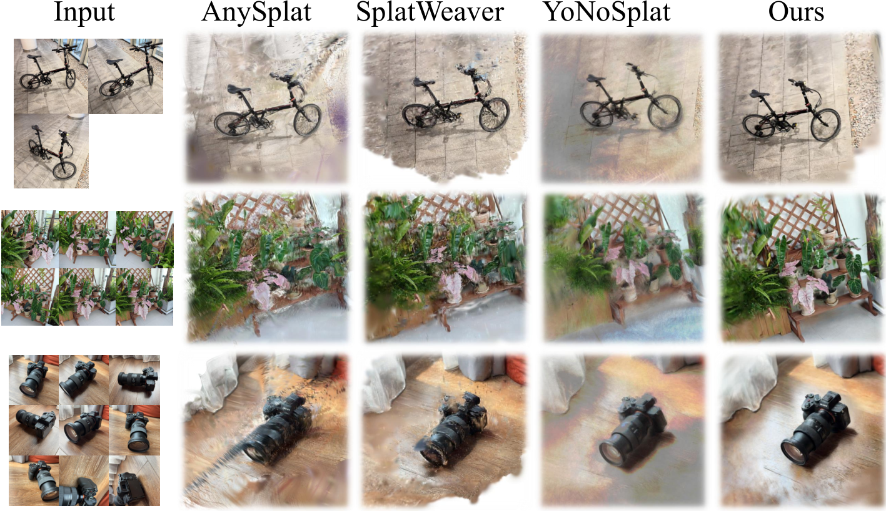
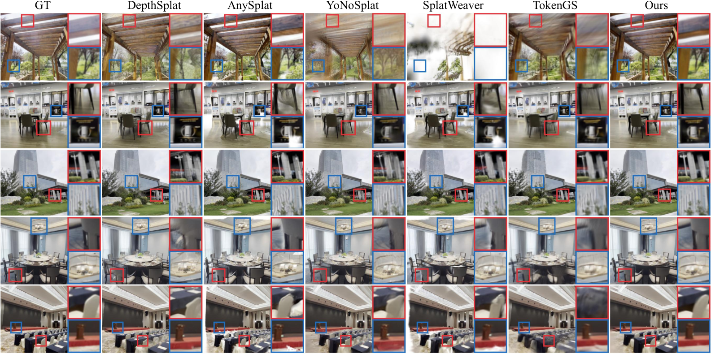
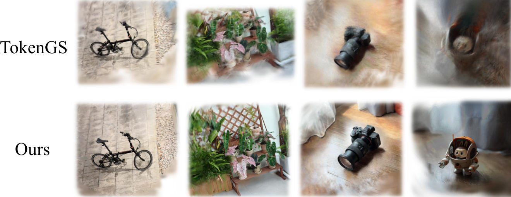
消融均在 base 150K 步(非完整 390K 训练)、4-view interp、三档均值(论文 §4.3 明说:全量训练太贵;Appendix D 用训练曲线论证相对排序在 150K 内已稳定,见图 11)。
| 变体 | PSNR↑ | SSIM↑ | LPIPS↓ | ΔPSNR |
|---|---|---|---|---|
| 双分支(完整) | 22.90 | 0.738 | 0.268 | — |
| 单分支查询(外观特征融合进几何流) | 20.92 | 0.659 | 0.344 | -1.98 |
| 去掉外观流(仅几何) | 18.64 | 0.578 | 0.425 | -4.25 |
论文的机制解释(§4.3,本笔记认可):收益不来自"加了外观特征"本身——融合进单分支反而比去掉还差只在一半;而是不同属性应各自聚合各自需要的证据:空间参数要宽的跨视角上下文立起场景布局,其余属性要局部纹理与视向线索。注意力可视化(图 3)支持该行为。
| 变体 | PSNR↑ | SSIM↑ | LPIPS↓ |
|---|---|---|---|
| 带早期正则 | 22.90 | 0.738 | 0.268 |
| 无早期正则 | 22.61 | 0.723 | 0.288 |
Δ=+0.29 dB,幅度小于属性解耦,但配套证据(图 9)显示早期正则让 Gaussian 结构更干净、不透明度分布更健康(红框处冗余无效 Gaussian 浓度更低)。
| backbone | PSNR↑ | SSIM↑ | LPIPS↓ |
|---|---|---|---|
| VGGT-Ω(默认) | 22.90 | 0.738 | 0.268 |
| VGGT(替换) | 23.07 | 0.739 | 0.275 |
对 DA3 替换的关键证据:换 VGGT 不更差反而 PSNR 略高(+0.18,在消融噪声量级内),说明效果主要来自"如何消费几何先验"而非特定 backbone 的特征表示(论文 §4.3 原话)。这给 §15 的 DA3/2DGS 替换路线提供了直接依据。
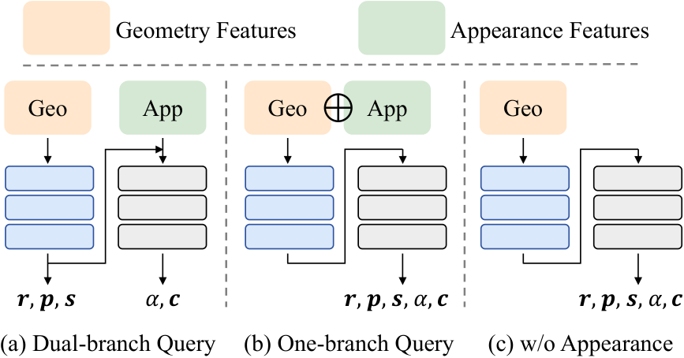
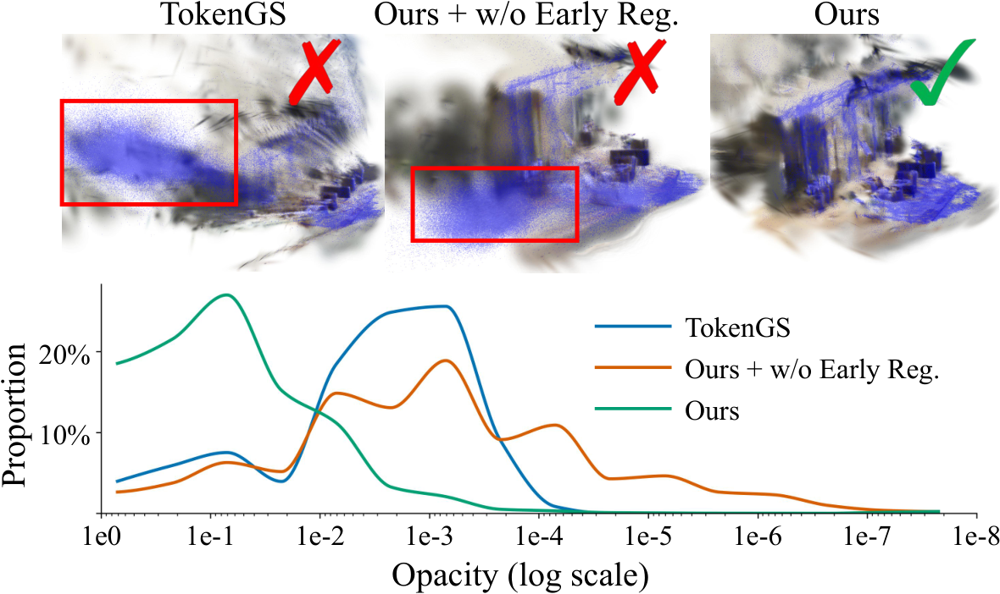
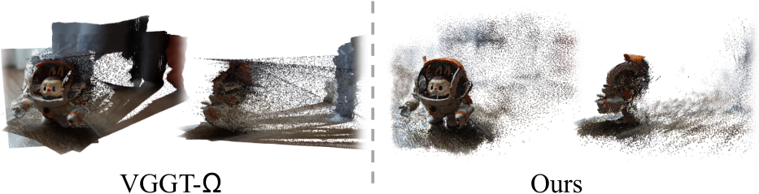
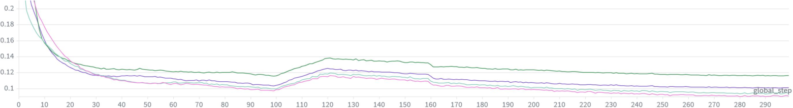
| 方法 | 年份 | 输入假设 | 场景表示 | 监督信号 | 训练数据 | 推理耗时 | 关键指标(DL3DV) | 开源 |
|---|---|---|---|---|---|---|---|---|
| QuerySplat | 2026 | 2-300 未标定视角 | 查询 slot→3DGS(非像素对齐) | 光度+LPIPS+可见性+早期 CD/α | DL3DV | 4v 0.95s / 12v 1.89s(H200) | interp 4v 24.58 / LPIPS 0.184 | 推理代码+权重(Apache 2.0,VGM 非商用) |
| TokenGS | 2026(CVPR) | 标定视角(固定输入数) | 统一查询→3DGS | 光度+可见性 | DL3DV | — | interp 4v 23.27 / LPIPS 0.303(发糊) | ✓ 推理 |
| DepthSplat | 2025(CVPR) | 标定 2/多视角 | 像素对齐 3DGS(深度增强) | 光度+深度 | 多数据集 | — | interp 4v 22.91 / LPIPS 0.185 | ✓ 完整 |
| YoNoSplat | 2025 | 标定/未标定(单模型) | 像素对齐 3DGS | 光度+位姿 | 多数据集 | — | interp 4v 22.85(标定)/21.96(pose-free) | ✓ 完整 |
| AnySplat | 2025(TOG) | 未标定任意视角 | 像素对齐 3DGS(体素合并) | 光度+几何蒸馏 | 多数据集 | — | interp 4v 17.39 / LPIPS 0.342(外推崩) | ✓ 完整 |
| SplatWeaver | 2026 | 未标定视角 | 自适应 primitive 分配 | 光度 | 多数据集 | — | interp 4v 19.24 / LPIPS 0.272 | — |
数字全部来自论文 Table 1(三档均值);推理耗时来自 Table 14(H200)。库内已有对应精读:2DGS、VGGT、π³、DA3、VGGT-Ω、InfiniSplat v2;路线层面见综述 前馈式高斯重建 2026 下半年调研 与 质量-速度 Pareto 全谱调研。
| 范式 | 代表方法 | 核心先验 | 局限 |
|---|---|---|---|
| 逐场景优化 3DGS | 3DGS / 2DGS / GOF | 逐场景光度监督 | 分钟级/场景,需密集视角 |
| 像素对齐前馈 | pixelSplat→DepthSplat→YoNoSplat/AnySplat | 相机射线绑定 + 深度模型 | 空间不灵活、怕位姿误差、外推弱 |
| 统一查询前馈 | TokenGS | 可学习查询解绑像素网格 | 属性纠缠发糊、无 3D 先验、依赖位姿 |
| 解耦查询 + VGM 先验 | QuerySplat(本文) | 冻结 VGM 定坐标系+几何特征,双分支解耦 | 查询预算固定、训练数据单一、VGM 非商用 |
| 几何冻结 + 渲染反馈精修 | InfiniSplat v2 | DA3 冻结几何 + GT 位姿对齐 | 训练依赖 GT 位姿,非纯 pose-free |
用户问题:把 DA3(几何 backbone)、2DGS(渲染 primitive)、QuerySplat(查询解码框架) 三者结合可能带来什么提升?以下按「替换插槽 → 预期收益 → 风险」逐点分析,所有判断给出代码/论文依据与置信度。
VGGTEncoder 独立封装(querysplat.py:67),特征层号、token 类型全是 yaml 配置键。| 维度 | VGGT-Ω(现状) | DA3(替换后) |
|---|---|---|
| License | FAIR 非商用(vendored) | Apache 2.0(DA3 全系,DA3 笔记) |
| 位姿估计 | baseline | 库内笔记记录:位姿超 VGGT 35.7%、几何超 23.6%(DA3 自评 VGBench) |
| 深度 | 相对尺度,相机归一化到第一视角 | metric 变体(Metric3D 系 canonical camera 变换,fc=300)——CD 正则可从"相对尺度先验"升级为"度量尺度先验" |
| 参数/速度 | 1B 级,Table 14 显示大视角集合下聚合占 96% 耗时 | DA3-Small 0.08B 起,替换后大视角推理有望数倍提速【推测】 |
| 特征接口 | camera/scene/patch token,层 4/11/17/23 | DA3 是 depth+ray 单目标输出、plain transformer,需写 adapter 把其中间层特征混成 F_geo;接口成本是本替换的主要工作量【推测】 |
预期提升:商用解禁(直接解锁部署)、位姿更稳 → pose-free 坐标系更准 → interp/extrap 受益;metric 深度让早期 CD 正则语义更实。参考平行证据:InfiniSplat v2 用 DA3 冻结几何分支已拿到 pose-conditioned LPIPS -25.8% 的 SOTA 级结果,说明 DA3 系几何先验喂给 Gaussian 头这条路已被独立验证;QuerySplat 的差异化在于查询解码 + 属性解耦,两者不冲突。
rendering/gs.py:8,46-58:quats + 3D scales)。换成 2DGS(surfel:2D 尺度 + 法线)是渲染层替换,不动查询框架。| 维度 | 3DGS(现状) | 2DGS(替换后,见2DGS 笔记) |
|---|---|---|
| primitive 几何 | 3D 椭球,体积感强、易漂浮 | 面元盘,ray-splat 距离渲染,几何面更贴表面、floater 更少 |
| 几何头改动 | 中心3+尺度3+四元数4=10 维 | 中心3+2D 尺度2+法线3(→四元数)+?维;几何解码器 head 需重训 |
| 与查询解码的契合度 | — | 高:query slot 本来就是"场景表面的一块证据",天然适合 surface-aligned 盘元;CD 到 VGM 伪点云的正则与 2DGS 的深度亲和损失同源 |
| NVS 保真 | DL3DV 24.58 dB 已验证 | 风险项:2DGS 优势在表面重建/网格导出,NVS 指标未必更高;无体积感primitive 在植被/毛发等"非表面"内容上可能掉点【推测】 |
| 下游(数字人/仿真) | 渲染好,网格差 | 可提 mesh → 对接仿真/3D 资产管线 |
| 组合 | 预期提升 | 置信度 | 主要风险 |
|---|---|---|---|
| QuerySplat + DA3 | 商用解禁 + 位姿/坐标系更稳 + 大视角推理提速 | 高(Table 4 + DA3 系独立证据) | 特征 adapter 工程量;DA3 特征层级与 VGGT-Ω 不同需重调 mixer |
| QuerySplat + 2DGS | 表面几何质量、floater 减少、mesh 可导出 | 中(机制合理,无直接实验) | NVS 指标可能回落;非表面内容(植被/毛发)退化;需重训 head |
| DA3 + 2DGS + QuerySplat | pose-free、可商用、表面准确的 feed-forward 场景重建 | 中(两项子替换各自成立,组合未验证) | 训练成本(390K 步工业级)+ 三重改动叠加的调试面 |
建议落地顺序:① 先换 VGM 插槽(DA3),冻结其余一切,复现 Table 4 级别的对比 —— 成本最低、证据最硬;② 再改几何 head 到 2DGS surfel,渲染损失与 TTO 直接复用(gsplat 原生支持 2DGS 光栅化);③ 合体后再谈大场景(query 预算固定是共同瓶颈,论文 Limitations 自己指向"分块重建+对齐合并")。
对 vggt_human pipeline 的适配性:pose-free 前馈 scene_gs 初始化可替代 COLMAP 的稀疏点云环节(24 视角内 11.5 GiB,单卡 3090 可行【推测】);T2V-生成视角重建(图 13)与 3D Scene Repair(图 12)两个应用演示与"生成辅助重建"主线直接相关。但 52 万 query-Gaussian 的表示与 3DMM/人体 Gaussian 拆分架构的耦合方式需要单独设计,不是即插即用。
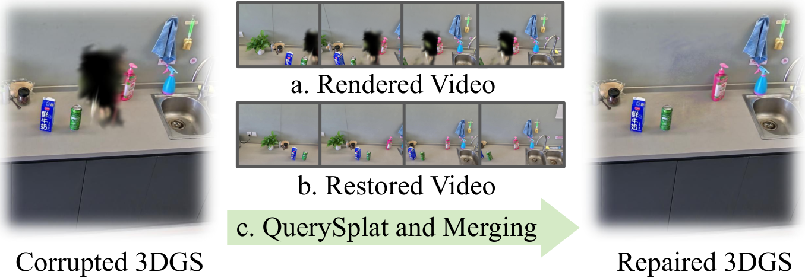
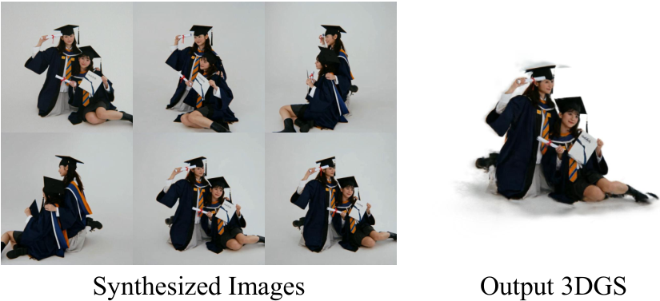
仅 DL3DV 训练(§4.1),所有 SOTA 宣称限定在 DL3DV;in-the-wild 只有定性图。佐证:Table 1 全部数字来自 DL3DV-Evaluation。改进:多数据集混训或域随机化;补 ETH3D/RE10K 定量。
论文 Limitations 自认:fixed query budget 限制大/复杂场景。改进方向论文已指:分块重叠重建 + Sim(3) 对齐合并 + 全局精修——与 LingBot-Map/Scal3R 的流式/TTT 思路可互补。
vendored VGGT-Ω/DINOv3 为 FAIR 非商用研究许可(NOTICE 直读)。改进:换 Apache 2.0 的 DA3(§15),一举解决许可 + 位姿 + metric 深度三问题。
代码 post_detach_query: false(querysplat.py:243-244),外观分支以几何 token 为基且不 detach——属性解耦发生在特征/查询空间,梯度路径上仍纠缠。改 true 做对照实验可能进一步涨点【推测】。
README 明说 inference-only;CD/α 地板/loss-rank 权重只能信 Appendix E 文字,无法源码复核。改进:放出训练代码(作者有放推理代码的先例,可能性存在【推测】)。
24.58(4v)→23.70(12v),论文未解释;视角变密后监督视角分布与固定查询预算的匹配可能恶化【推测】。值得消融:固定查询预算 vs 视角数的 scaling 曲线。
Appendix E 写 "first-order SH",paper ckpt 实为 SH0(README 承认);z_offset=1.0、α 偏置 -2.0 论文未提。不影响结论,但复现者易踩坑。
lr 5e-3 / 默认 20 步只存在于 infer.py 参数默认值;论文只说 "20 and 50 steps"。引用 TTO 数字时需注明口径。
α<0.005 的 Gaussian 不写入 PLY(yaml gaussian_save_opacity_threshold),导出后点数 ≠ 52.4 万,对比论文数字时注意口径。
QuerySplat 把 query-based 前馈 3DGS 的两个结构性缺陷(属性纠缠、无 3D 先验)用「双分支双查询 + 冻结 VGM 先验 + 瞬态早期正则」一并解决,在 DL3DV 上同时超过最强 pose-required(+1.04 dB)与 pose-free(+2.30 dB)baseline,并首次让 query-based 渲染锐度追平像素对齐方法。其对领域的真正贡献不在于 SOTA 数字,而在于三点方法论:① 属性应按梯度性质解耦建模(消融 -1.98/-4.25 dB 的硬证据);② VGM 是 Gaussian 头的通用几何插槽(VGGT↔VGGT-Ω 打平);③ 早期正则必须是瞬态的(全程施加反而失稳)。在演进脉络上,它与 InfiniSplat v2(冻结几何 + GT 位姿)从两端收敛到同一结论——几何先验要冻结、属性要靠渲染反馈学、位姿要么外包给 VGM 要么用 GT 对齐;query-based 与非像素对齐是前馈 3DGS 摆脱像素网格束缚的下一步。
团队:Yinglong Li、Donghui Shen、Xiaoyu Zhang、Zhichao Ye、Hongyu Wu(通讯)、Aimin Hao、Guofeng Zhang(通讯)、Haomin Liu——北航虚拟现实技术与系统国家重点实验室 + InSpatio Research(该团队此前工作含 VGGT-Ω 合作脉络)+ 浙大 CAD&CG 国家重点实验室。
论文:arXiv:2608.01186(v1,2026-08-02,无会议标注)· HTML 全文
资源:项目主页(在线画廊) · GitHub(推理代码,Apache 2.0) · HF 权重(双 checkpoint)
库内兄弟笔记:VGGT-Ω(VGM) · DA3(替换候选) · 2DGS(渲染器替换候选) · VGGT · π³ · InfiniSplat v2(DA3-GS 对照) · 前馈式高斯重建综述 · Pareto 全谱调研